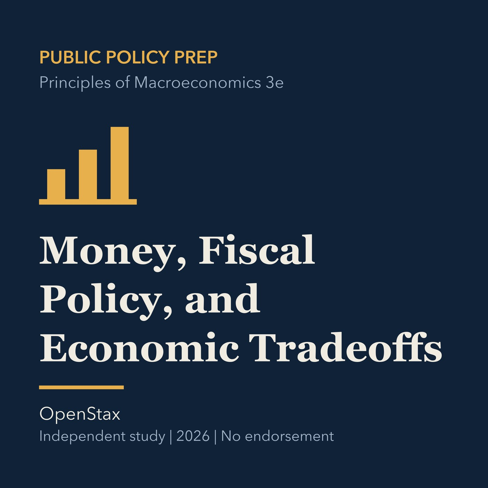

EPISODE 07
Money, Fiscal Policy, and Economic Tradeoffs
Compares monetary and fiscal policy, stabilization choices, growth, trade, and local consequences.

- Stable GUID
b16362fc-363f-57a5-abad-26ed2710d4f3- Release
- public-policy-prep-v2026.1
- SHA-256
7f40d2b7936d7674ef1f9bccf2922c76caa3126952e0dd304c6ee81f309cbe05